Japan / Kagawa / Higashikagawa
Higashikagawa, Kagawa: things to do, food and stays
Higashikagawa · Kagawa
Higashikagawa
Highlighted on the Kagawa map.
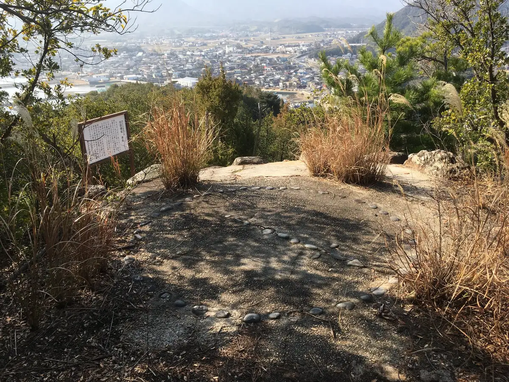
Stay
HOTEL AZ 香川東かがわ店

HOTEL AZ Kagawa Higashi Kagawa
Inn in Minato, Higashikagawa with breakfast available and Wi-Fi.
クラフトホテル瀬戸内
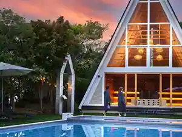
Kurafuto Hotel Setochi
Hotel in Sanbonmatsu, Higashikagawa with a sauna.
ゲストハウス三本松港
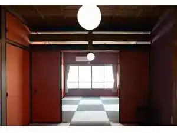
Guesthouse Sanbonmatsu Minato
Guesthouse in Sanbonmatsu, Higashikagawa with one group per day.
ゲストハウスKe’oKe’o
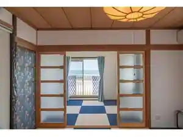
Guesthouse Ke oKe o
Guesthouse in Yokochi, Higashikagawa with one group per day.
ゲストハウス アミーマンボス
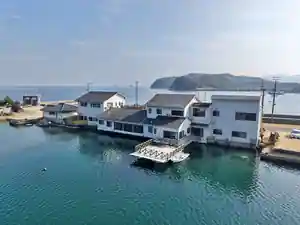
Guesthouse Amimanbosu
Guesthouse in Hikita, Higashikagawa with long stays.
ザランタン東かがわ
Zarantan Higashi Kagawa
ゲストハウスHIKETA秘密基地
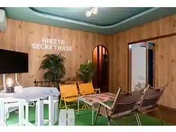
Guesthouse HIKETA Himitsukichi
Guesthouse in Hikita, Higashikagawa with one group per day.
瀬戸内リゾートベッセルおおち
Setochi Resort Besseru Ochi
ＳＥＴＯ家ＴＳＵＤＡ
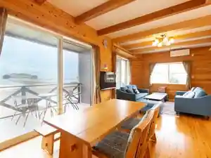
SETO Ie TSUDA
Inn in Umashino, Higashikagawa with scenic views.
ＧＯＭＹＯ ＬＩＦＥ ＨＯＴＥＬ
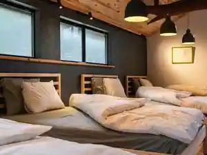
GOMYO LIFE HOTEL
Inn in Gomei, Higashikagawa with a quiet countryside setting.
Dining
吉本食品
Yoshimoto Shokuhin
六車
Muguruma
うどんや
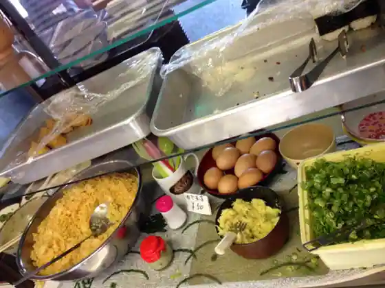
Udonya
東かがわマルタツ手打ちうどん 伊座本店
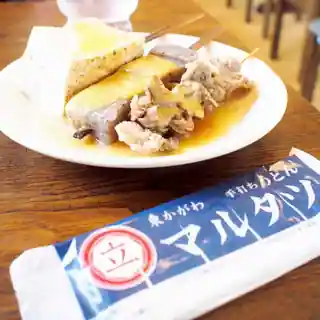
Higashi Kagawa Marutatsu Teuchi Chiudon I Zamoto
ばいこう堂 本店
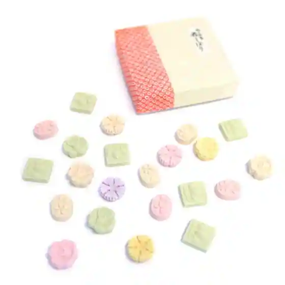
Baiko Do Hon
元匠 湊店
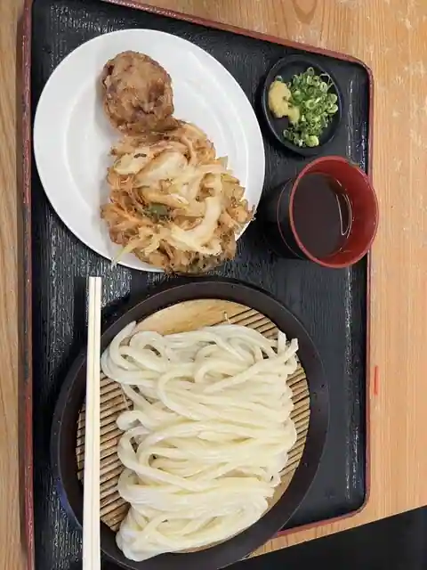
Moto Takumi Minato
三谷製糖 羽根さぬき本舗
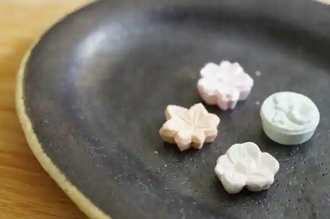
Mitani Seito Hane Sanuki Honpo
活魚料理 讃岐家
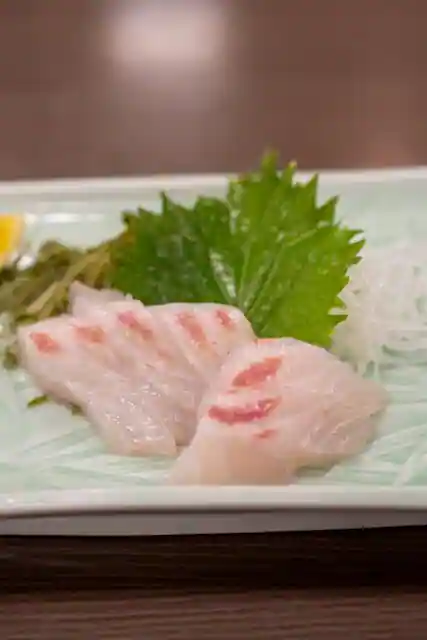
Ikeuo Ryori Sanuki Ie
ワーサン亭
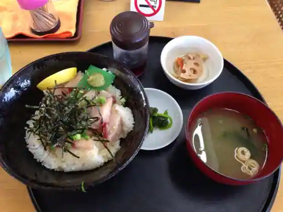
Wasan Tei
イタリア料理 ラ・フレスカ
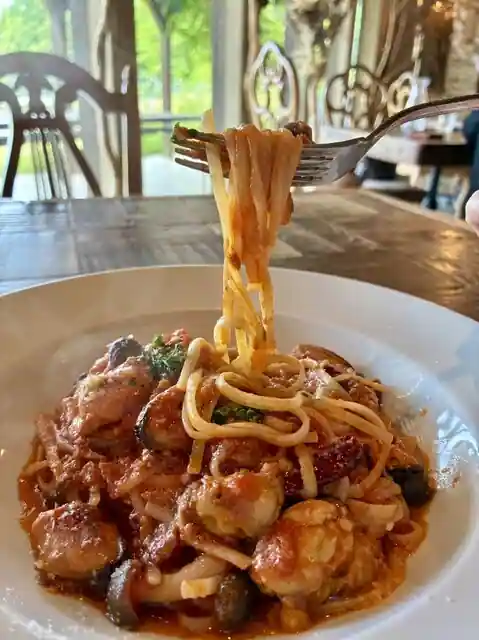
Itaria Ryori Ra Furesuka
元匠 東かがわ店
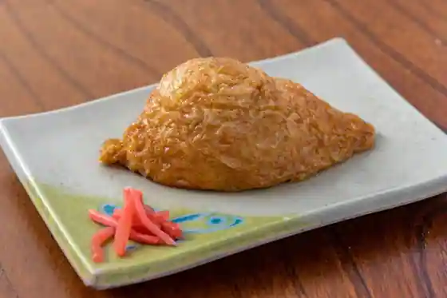
Moto Takumi Higashi Kagawa
山賊村
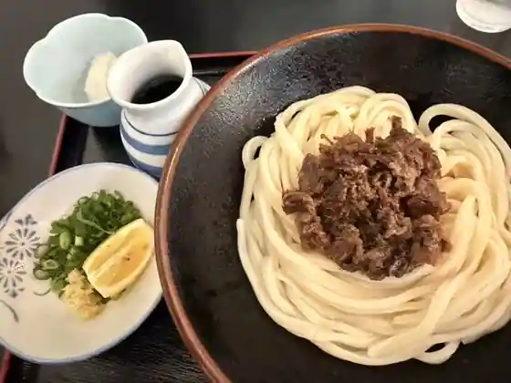
Sanzoku Mura
味道源
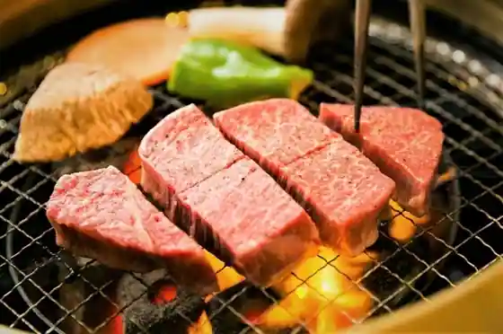
Aji Michi Gen
手打ちうどん もとい
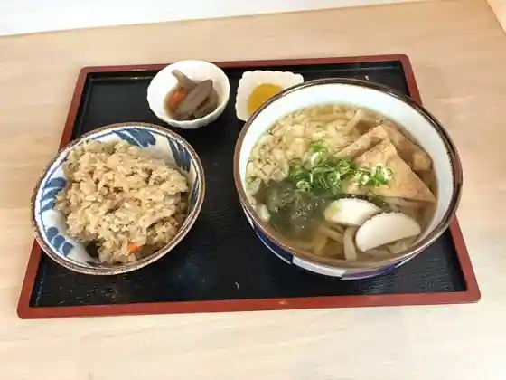
Teuchi Chiudon Motoi
SANU
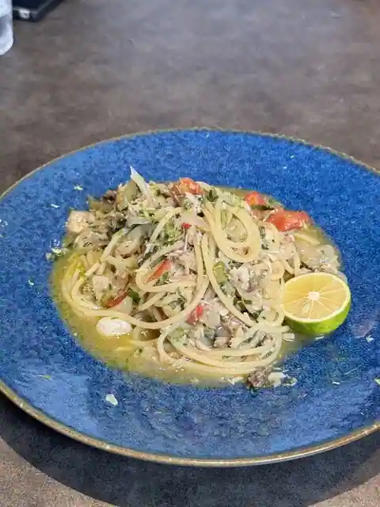
SANU
NICOPAIN
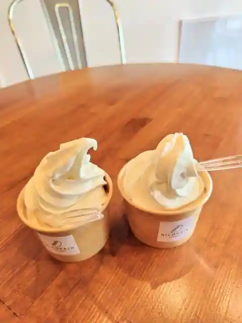
NICOPAIN
ダンケ
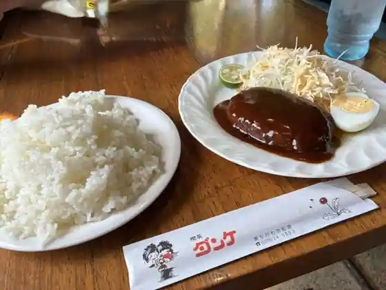
Danke
巴堂
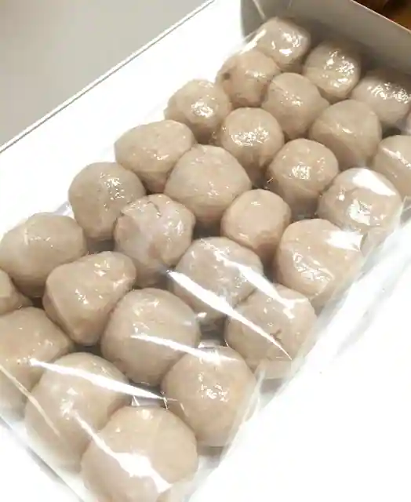
Tomoe Do
かめびし茶屋
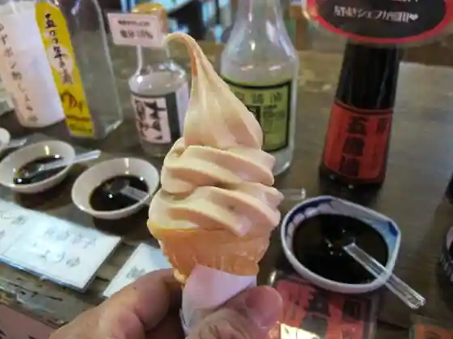
Kamebishi Chaya
福味 三本松店
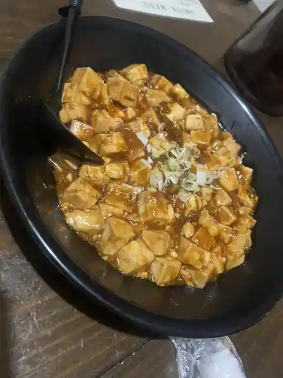
Fuku Aji Sanbonmatsu
ルトロヴァイユ
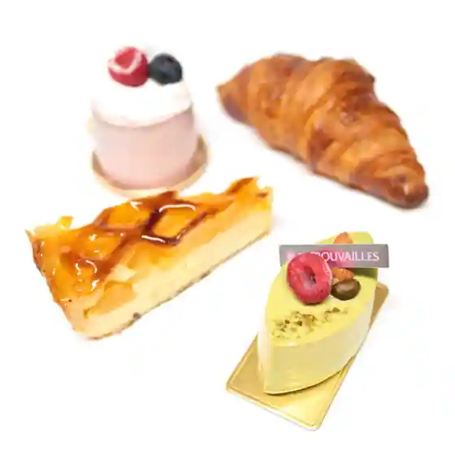
Rutorovaiyu
四季
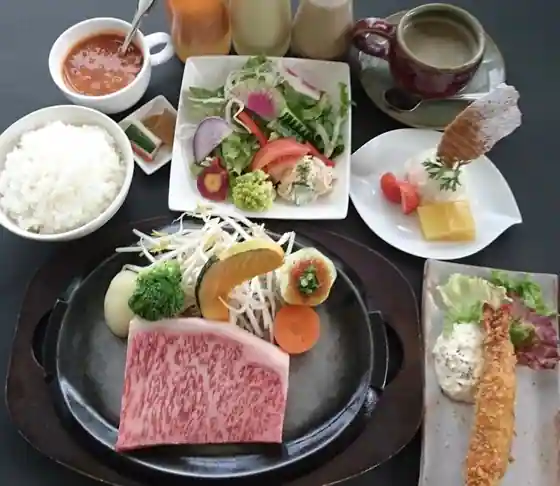
Shiki
よだ
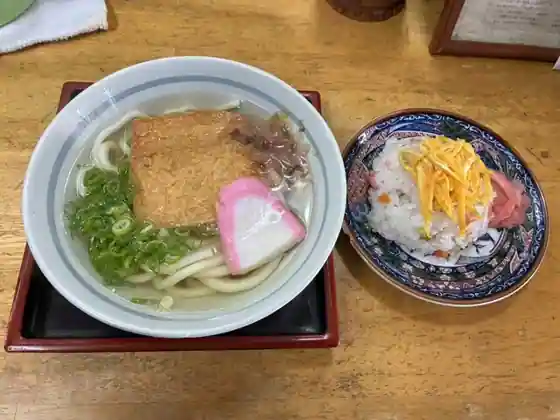
Yoda
TOIRO COFFEE
TOIRO COFFEE
Sights
Hikita Castle Ruins
Hikita no Machi Nami
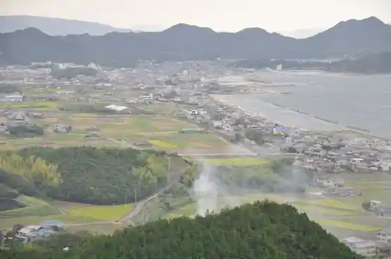
Hikita Minato
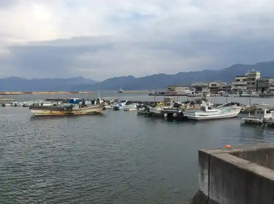
Hakucho Shrine
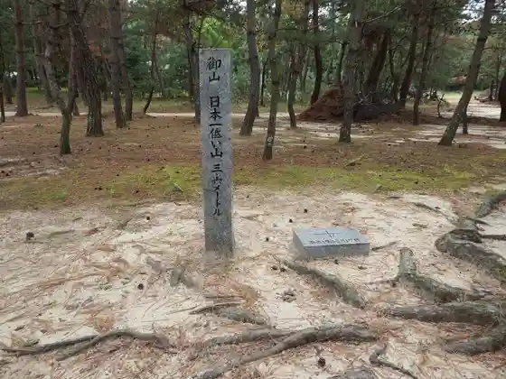
Shaku Oji
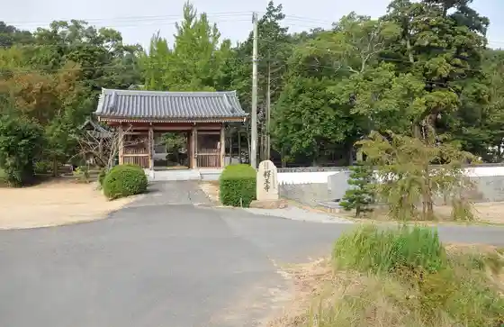
Yoda Tera